한 동네에서
세 가지를 함께
가격은 건물에, 경사와 고도는 땅에. 같은 지도 위에서 거래·건물·지형을 바꿔 보며 장소의 맥락을 읽습니다.
- 월세·전세·매매 전환
- 3D·2D 보기
신고 계약을 집계한 화면입니다. 현재 매물을 보여주는 서비스가 아닙니다.
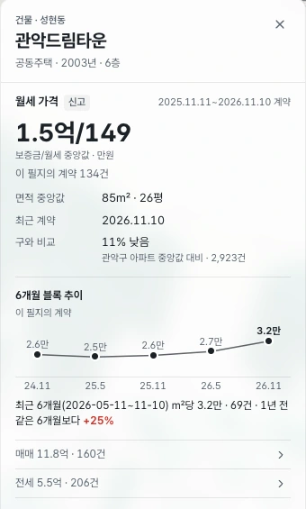
전체 개발 화면 보기
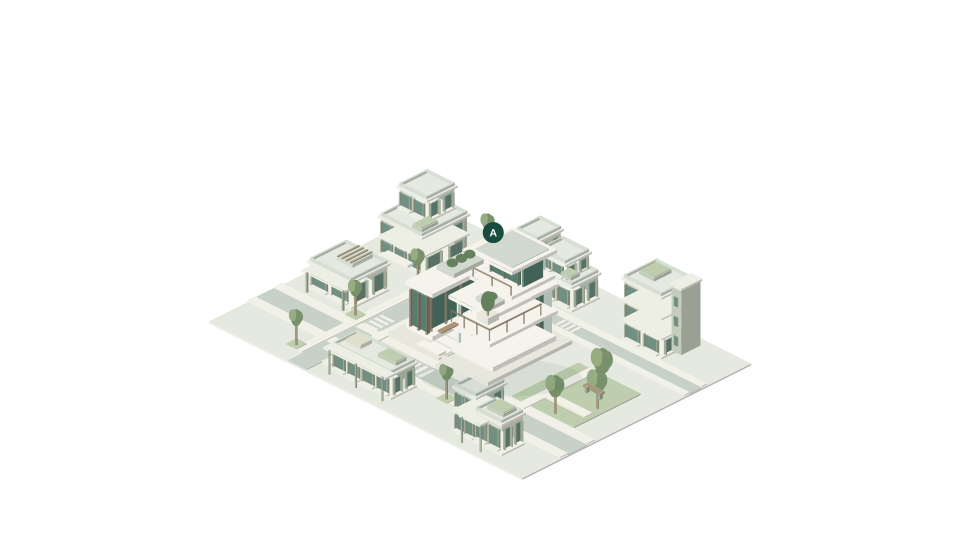
신고된 가격에 건물과 지형의 조건을 겹쳐 읽는 지도.
ZIP은 지금, 관악구에서 시작합니다.
아래로 내려가며 한 장소의 조건을 펼쳐보세요.
월세·전세·매매의 신고 계약에서 시작합니다.
장소 A는 이해를 돕기 위한 월세 예시입니다.
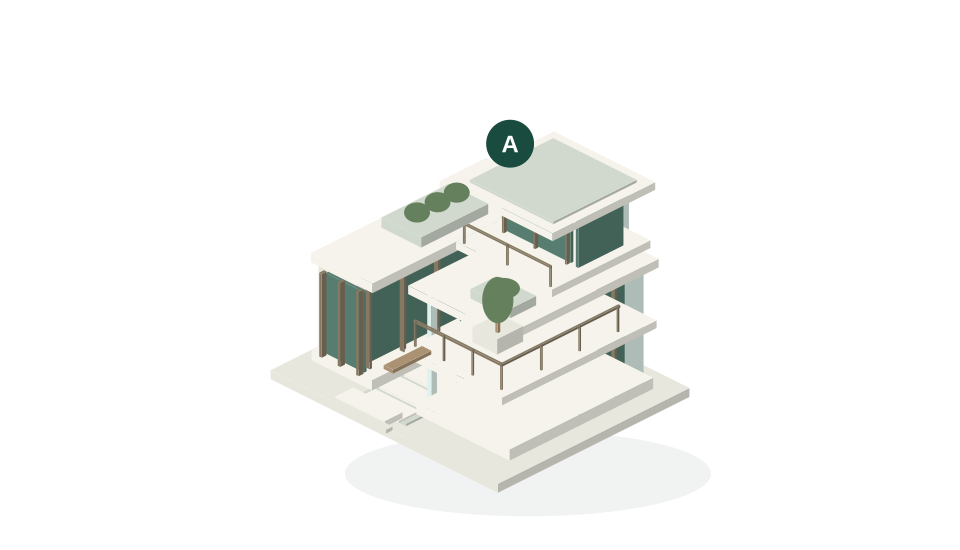
경사와 고도는 지형에서 추정하고,
준공연도는 건물 자료에서 읽습니다.
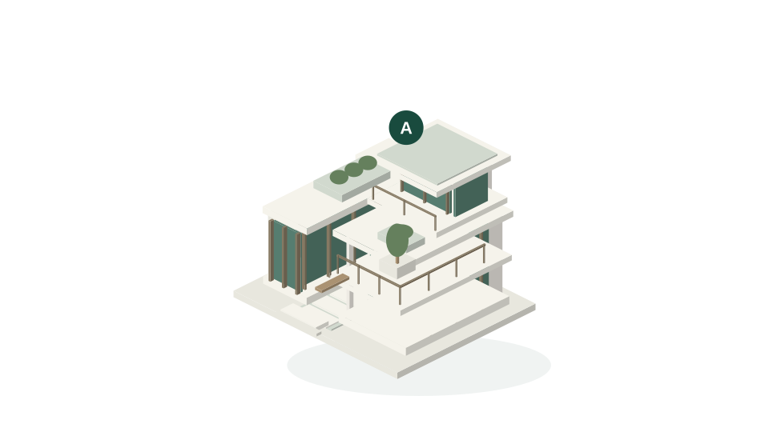
경사·고도·준공은 장소의 서로 다른 조건입니다.
완만한 길에 비중을 두면 점수와 색이 달라집니다.
가격은 이 점수에 넣지 않습니다.
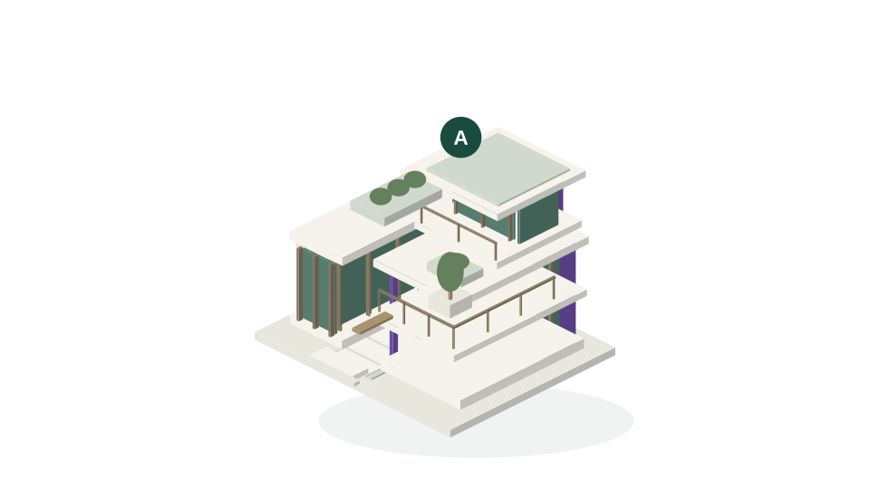
같은 장소의 점수가격 제외 · 100점 기준
중요도가 바뀌면 같은 장소의 점수도 달라집니다.
세 곳을 담아 조건과 가격의 차이를 함께 읽습니다.
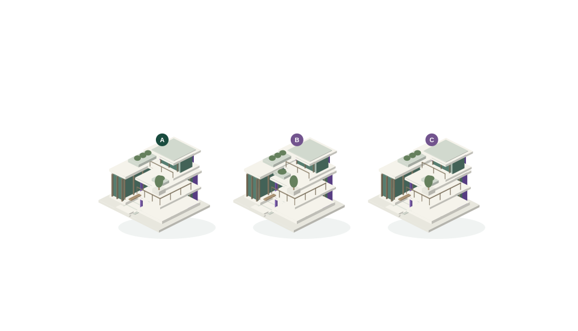
경사 80% · 고도 10% · 연식 10%
| 비교 기준 | A | B | C |
|---|---|---|---|
| 내 기준 점수 | 80점 | 74점 | 65점 |
| 월세 | 35만 | 48만 | 61만 |
| 보증금 | 1,000만 | 3,000만 | 5,000만 |
| 면적 | 23㎡ | 30㎡ | 37㎡ |
| 경사 | 1% | 2% | 3% |
| 고도 | 90m | 83m | 76m |
| 준공 | 1995년 | 2001년 | 2007년 |
점수는 개인의 중요도에 따른 예시입니다.
실제 제품은 같은 거래·주택 유형에서 비교합니다.
여기서는 가상 장소로 환산 방식을 보여줍니다.
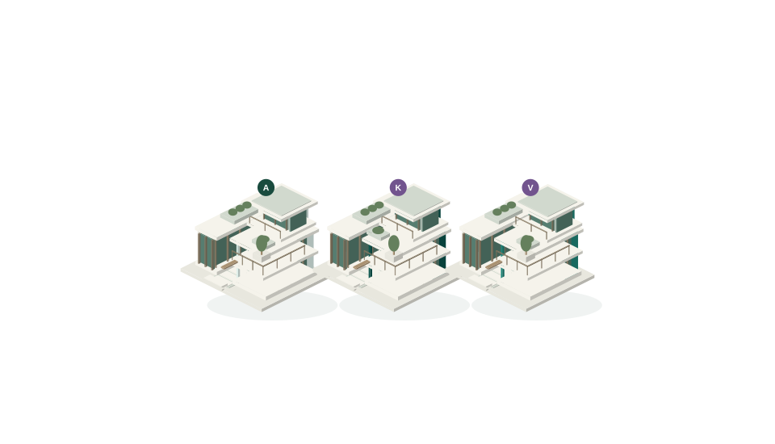
점수 ±5점인 예시 2곳 비교
월 환산 비용 39.17만 원 ÷ 23㎡
월세 35만 + 보증금 월환산 4.17만
연 5% 가정 · 12개월 환산 · 관리비 제외
예시 5곳 미만 · 백분율 요약 없음
장소 K 3.41만/㎡ · 장소 V 2.54만/㎡
신고된 가격, 추정한 지형, 자료 없는 조건.
무엇을 알고 모르는지 구분해 보여줍니다.
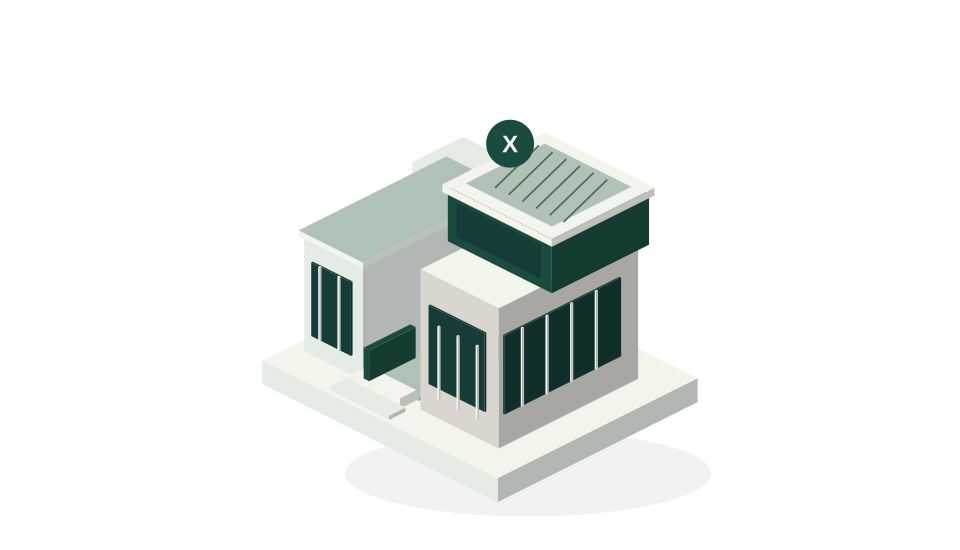
자료 없음은 0점이 아닙니다.
실제 제품에서 읽는 자료 아래 개발 화면에서 확인
같은 생각이 관악구 지도에서는 어떻게 보일까요.
현재 만들고 있는 ZIP의 화면으로 이어집니다.

한 동네를 고르고,
기준과 시간을 바꿔가며 살펴봅니다.
장소 A · 월세 35만 · 시연 기준 점수
설명용 가상 도시입니다.
설명용 3D 모형 · 가상 수치
한 장소를 선택하고, 기준을 바꾸고,
지나온 시간과 근거까지 확인합니다.
2026년 11월 13일 개발 화면
같은 장소와 카메라를 유지한 네 장면입니다.
개발 중인 실제 화면입니다. 누르면 원본 크기로 볼 수 있습니다.
가격은 건물에, 경사와 고도는 땅에. 같은 지도 위에서 거래·건물·지형을 바꿔 보며 장소의 맥락을 읽습니다.
신고 계약을 집계한 화면입니다. 현재 매물을 보여주는 서비스가 아닙니다.

경사·고도·연식의 중요도를 조절합니다. 꼭 지켜야 할 조건은 ‘반드시’로 따로 정하고, 같은 동네를 내 기준으로 다시 봅니다.
점수는 선택한 조건의 가중 평균입니다. 모두에게 적용되는 등급이나 자동 추천이 아닙니다.
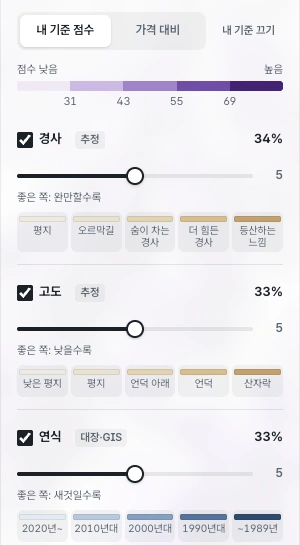
시간 막대를 옮기면 그 시기의 신고 계약으로 지도를 다시 읽습니다. 한 칸은 6개월 구간이고, 달마다 한 칸씩 이동합니다.
기간별 계약 구성과 중앙값을 비교합니다. 같은 집의 가격 변동률이나 실시간 시세는 아닙니다.
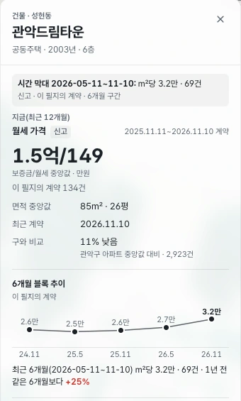
가격의 추이와 계약 수, 분포에서의 위치를 함께 펼칩니다. 어떤 기간과 범위를 비교했는지 확인하고 요약 표도 내려받을 수 있습니다.
서울시 신고 자료, 건물 정보와 추정 지형을 구분합니다. 자료 없음과 비교 근거 부족도 그대로 남깁니다.
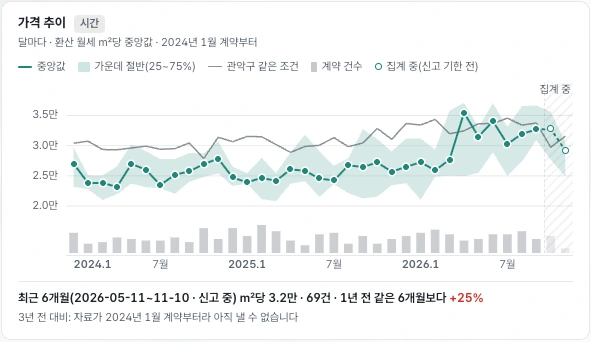
화면 속 지도·자료: 서울특별시, 국토교통부, 국가데이터처, © OpenStreetMap contributors. 화면은 촬영 당시의 개발 상태이며, 실제 정보는 출처·집계 기간과 함께 읽어야 합니다.
지금은 관악구의 가격·건물·지형부터.
장소를 이해하는 데 필요한 정보를 이어갑니다.
후속 개발 계획입니다. 현재 제공 기능이나 출시 일정의 약속이 아닙니다.
자료가 있는 만큼 말하고,
모르는 부분은 남겨둡니다.
신고된 계약은 현재 매물이 아닙니다. 경사·고도는 지형 자료에서 추정한 값이며, 자료는 수동 갱신합니다.
앞의 3D 모형과 직접 체험은 설명용 가상 예시입니다. 이 아래 버튼으로 실제 관악구 서비스에 접속하는 것은 아닙니다.